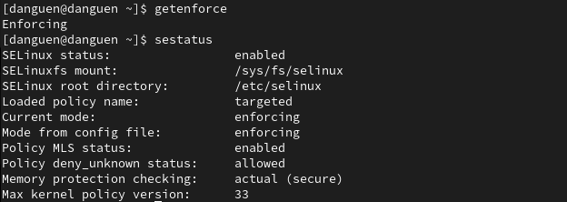
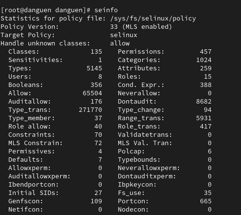
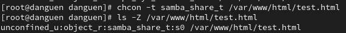
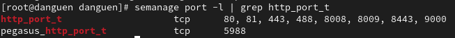
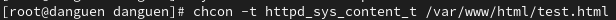

- Нгуен Дык Ань
- Студенческий билет: 1032215251
- Группа: НКНбд-01-21
- Российский университет дружбы народов
- https://github.com/NguyenDucAnh0512
Мандатное разграничение прав в Linux
11 октября 2024
Развить навыки администрирования OC Linux. Получить первое практическое знакомство с технологией SELinux
Задать параметр ServerName в конфигурационном файле /etc/httpd/httpd.conf
Проследить, чтобы пакетный фильтр был отключён или в своей рабочей конфигурации позволял подключаться к 80-у и 81-у портам протокола tcp


Убедиться, что SELinux работает в режиме enforcing политики targeted с помощью команд getenforce и sestatus
Проверять, что услуга httpd работает
Использовать команду ps auxZ | grep httpd, найти веб-сервер Apache в списке процессов
Посмотрить статистику по политике с помощью команды seinfo




Создать от имени суперпользователя html-файл /var/www/html/test.html
Обратиться к файлу через веб-сервер, введя в браузере адрес http://127.0.0.1/test.html
Проверить контекст файла test.html можно командой ls -Z /var/www/html/test.html
Измените контекст файла /var/www/html/test.html с httpd_sys_content_t на samba_share_t



Попробовать ещё раз получить доступ к файлу через веб-сервер
Попробовать запустить веб-сервер Apache на прослушивание ТСР-порта 81 и убедиться, что порт 81 появился в списке
Выполнять перезапуск веб-сервера Apache и проанализировать лог-файлы
Вернуть контекст httpd_sys_cоntent__t к файлу /var/www/html/ test.html




Попробовать получить доступ к файлу через веб-сервер, введя в браузере адрес http://127.0.0.1:81/test.html
Удалить файл /var/www/html/test.html.- Удалить файл /var/www/html/test.html.

После работы я получил практическое знакомство с технологией SELinux и развил навыки работы с ним.